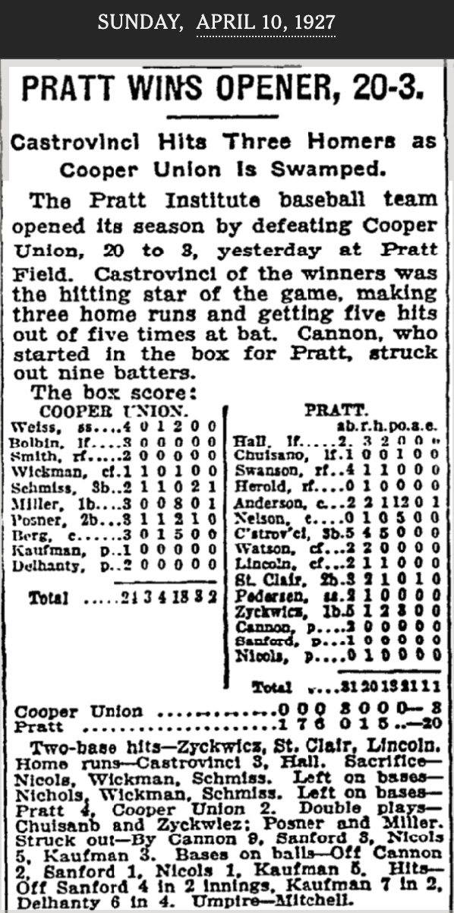

A 2024 Dodgers vs. Yankees World Series was everything Major League Baseball was hoping for. The two teams, based in Los Angeles and New York respectively, play in the two largest American TV markets. Aaron Judge of the Yankees and Shohei Ohtani of the Dodgers were both likely MVPs, as well as the closest modern MLB players can get to being household names. Furthermore, Ohtani was already a superstar in Japan before coming to play in the United States, and continued support from his home country had already boosted the popularity of this year's postseason on a global scale.
Forbes,
MSNBC,
ESPN,
Newsweek,
Sports Illustrated,
Yahoo Sports,
and countless others all specifically used the words "dream matchup" to describe what this series could mean for baseball at large.
USA Today
called it MLB and Fox's "holy grail." Sure enough, the series averaged 15.8 million viewers across its five games, which was a
67%
increase over the Texas Rangers vs. Arizona Diamondbacks matchup the previous year, and the highest World Series viewership since 2017.
This all looks like great news for baseball until one puts the numbers in perspective. The last time the Dodgers and Yankees faced off in the Fall Classic was in 1981, and that series averaged 41.4 million viewers. In 2024, with all the stars aligning in the most lucrative markets and MLB getting the matchup of its dreams, viewership was less than half of that. If anything, this World Series doesn't inspire optimism - it shows us what baseball's ceiling is. It's not like the Dodgers and Yankees can face off every year, and even if they could, it wouldn't be enough to dethrone baseball's biggest competition.
Earlier this year, Super Bowl LVIII aired for an audience of 123.4 million viewers, making it the most watched TV event of all time. News outlets including the LA Times and Washington Post have attributed the NFL's extra attention to Taylor Swift and her relationship with Travis Kelce. For those who don't follow sports, Kelce is a tight end for the Kansas City Chiefs and, after winning LVIII, a three-time Super Bowl champion. As for Taylor Swift, there's nothing I need to fill you in on. Whether or not you listen to her music, you know who she is.
The intensity of Taylor Swift's fame has something to do with longevity, which has something to do with her ability to keep reinventing herself. Each of her 11 studio albums (14 if you're counting re-releases) has its own distinct sound and visual aesthetic, all showcased by her brazenly self-referential Eras Tour. And eras is the perfect word for it, because these different iterations of Swift transcend any song- or album title-delineations. Swifties (fans of Taylor Swift, obviously) have developed widely agreed-upon symbols and color schemes that correspond to each era. These can be seen in
friendship bracelets
exchanged at concerts and
mood boards
circulated online. Some have become so familiar with Taylor Swift's wardrobe cycles that they participate in
Fantasy Swiftball,
an online user-created game that prompts players to guess in advance of every live performance which outfit Swift will wear for each song. Taylor Swift has never been more relevant. She is the queen of the rebrand.
Major League Baseball is attempting something of a rebrand itself. Since using the pandemic-shortened 2020 season as a testing ground for long-controversial rule changes, including the extra innings automatic baserunner and the National League DH, commissioner Rob Manfred has continued to push increasingly aggressive updates to the game each year. MLB's recent "Baseball is Something Else" campaign leaned into this with videos of players demonstrating how the new season's larger bases, defensive shift limits, and pitch clocks would inject more action into the games and speed up pace-of-play. The same campaign also has videos of Brian Tyree Henry saying things like, "I've seen things you wouldn't believe. But this? This I have not seen." Never mind that this ad is intercut with footage of home runs and diving catches, the two most popular types of baseball highlight that get showcased in every MLB promotional campaign every year. Baseball is different now.
So is the rebrand working? Midseason reports from this year showed that attendance is up 2% from 2023, the average age of ticket buyers has been dipping lower since 2019, and nationally televised MLB broadcasts are 23% more popular in the 18-34-year-old demographic. However, these statistics aren't as promising when viewed in the context of the broader professional sports landscape. A recent Gallup poll revealed that only 5% of young adults between the ages of 18 and 29 named baseball their favorite sport to watch, tying it with ice hockey and placing it behind football (28%), basketball (13%), and soccer (8%). Even at its highest stakes, MLB can't compete with the NFL—since 2022, the World Series has been scheduled to deliberately avoid Sunday and Thursday games so as not to lose viewers to regular season football. Compared to other sports, baseball has never been less relevant.
Let's take another look at this year's Super Bowl. There are a handful of non-Swiftie reasons that could explain its record-breaking ratings, including the fact that the game went into overtime and that it set the stage for the Chiefs to become the first repeat champions since 2004. On the other hand, a flash survey from Numerator found that 20% of this year's Super Bowl viewers were rooting for the Chiefs and Travis Kelce because of his relationship with Taylor Swift. Other statistics suggest a possible viewership bump from her fanbase: Sports Media Watch reported that women aged 18-24 saw the highest year-over-year Super Bowl viewership gain of any demographic with a 24% increase, and that girls 12-17 saw an 11% jump.
So let's say Taylor Swift does contribute a non-negligible amount to the NFL's growing popularity. Who cares? It's not like every other professional sports organization can just grow its own Taylor Swift in a lab, sign her or set her up with one of their athletes, and wait for the millions of new fans to roll in. What part of this is actually replicable?
I'd like to direct you to New Heights with Jason and Travis Kelce, a podcast hosted by Taylor Swift's boyfriend and Taylor Swift's boyfriend's brother. In September 2023, just days after Swift had attended a Chiefs game and the new couple's relationship was officially confirmed, the brothers Kelce dedicated the "No Dumb Questions" segment of their podcast to their new Swiftie audience. Between patiently answering questions like "what's a field goal," and "what is a down" from obvious Taylor Swift stan accounts, they created an environment that sports communities don't often offer. This is an environment where watching a game to catch glimpses of your favorite musician in the audience is taken seriously as a way to engage with the sport. It's one where the "community" part of the sports community is not gatekept behind the "sports" part. And football ultimately gained viewers because of it.
If Major League Baseball wants a fighting chance in the popularity contest of American professional sports, it must move beyond trying to rebrand itself as something it's not: a fast-paced, action-packed sport like football or basketball. We've tried that for years, and it isn't working. What MLB needs is to speak to new audiences - including, and especially, the ones who don't know anything about sports. That doesn't necessarily mean Rob Manfred should add Shohei Ohtani, Taylor Swift, and each of their significant others to a conference call and try to negotiate some sort of 1973 Yankees-style wife swap (although that certainly would get my attention). It isn't about Taylor Swift. It's about what she represents. There is a whole world out there of terrifying, devoted fan communities just frothing at the mouth to see their own interests spotlighted in new arenas (literally). We've seen glimpses of this already, with the KPOP groups aespa and (G)I-DLE performing at MLB's Seoul Series to open the season this past spring. If we can keep up this energy every year, we've got something better than Taylor Swift.
What do a Banana, a Brat, and Alexander Hamilton have in common?
Taylor Swift's impact on the NFL demonstrates that MLB could broaden its reach by rallying established fan communities from unlikely industries. This raises the question of how to get the attention of these fans, especially if they've already written off sports as inaccessible or uninteresting. Lucky for us, there are precedents for brands using unconventional methods to bring in previously untapped audiences - one of which is a baseball team that completely reimagined what the game could be. I'm talking about the Savannah Bananas.
Jesse Cole, the owner of the Savannah Bananas, has been focused on accessing new audiences for years now. When his exhibition barnstorming baseball team was profiled by the New York Times in 2022, Cole explained, "We want people who used to say 'I don't like baseball' to say, 'I have to see the Bananas.'" For those who aren't in the know, the Savannah Bananas were founded in 2016 as a collegiate summer team competing in the Coastal Plain League (CPL) and gained popularity for, in their own words, "making baseball fun." This entails unique innovations they've made to the ballpark-going experience, such as their senior citizen dance team known as the "Banana Nanas," their "Dad Bod Cheerleading Squad" known as the "Man-Nanas," and the "Banana Baby": a title bestowed upon one infant each game, who is then dressed in a banana costume and lifted into the air, Lion King-style. Their players, coaches, and umpires do coordinated song and dance numbers on the field. They also famously developed an alternative version of baseball, which is of course called "Banana Ball."
Designed to promote fan engagement and speed up the pace of an actual baseball game, Banana Ball has its own distinct set of rules. Among them: no game is to last longer than 2 hours, foul balls caught by fans are to be counted as outs, and rather than the winner of a game being decided by cumulative runs scored across nine innings, each inning serves as its own mini-game where whichever team scores more is awarded one point (except for the ninth inning, in which every point counts). Banana Ball originated as an intrasquad exhibition game that the Bananas would play during homestands in the CPL, but by 2022 its popularity had grown to the point that the team announced it would be exiting the league in order to play Banana Ball full time.
Then Banana Ball stopped being the team's main export. Their @thesavbananas TikTok account exploded in popularity, reaching 2.5 million followers in May 2022 for more than double their follower count from March. By February 2023, the Bananas were nearing 4 million. As of this writing in December 2024, they're closing in on nine. For reference, the Golden State Warriors of the NBA only have 6 million followers and that's the most of any American professional sports team. How did the Bananas manage to dominate the short form video platform? "Cute boys," explains Savanah Alaniz, their college intern-turned-marketing coordinator who first pitched the idea of starting a team TikTok account in early 2020. "We had a 70% female audience that first summer because we were posting shirtless players dancing." As the Bananas' audience grew and its gender breakdown evened out, the team's social media strategy started to lean more on "Banana-fying" existing TikTok trends - this most often means players dancing or lip syncing to the platform's top songs and dialogue clips.
All of these factors - the ballpark experience, the faster-paced design of Banana Ball, and the team's commanding TikTok presence - have prompted the media to come to the same conclusion: that the Savannah Bananas are setting an important example for MLB. To Alden Gonzalez of ESPN, the Bananas' games are "part circus and part professional wrestling...and maybe Major League Baseball can learn something from it." Jason Gay of The Wall Street Journal writes that Banana Ball may be "extreme," but it addresses what "a lot of longtime baseball fans are saying about the sport: it needs to enliven itself, aggressively." AJ Willingham at CNN wonders if "Major League Baseball could learn a thing or two from the charming personalities and social media magic" of the Bananas.
And it would appear that Major League Baseball has. They're clearly aware of the Savannah Bananas and have been for some time now - in 2023, former major leaguers from the MLB Players Alumni Association played the Bananas in a three-game Challenger Series, and in 2024 MLB began opening its stadiums to host Banana Ball for the team's world tour. As for the actual product on the field, Banana Ball may have put additional pressure on MLB to do something about the pace of play concerns that had been plaguing the sport for years. The organization had already been tinkering with rule changes in the minor leagues, but it wasn't until 2023 that the pitch clock - a crucial component of cutting down game times - was integrated at the major league level. Sure enough, this change shortened the average length of a nine-inning game to 2 hours and 40 minutes, a 24-minute decrease from 2022. Regular season attendance that year was the highest it had been since 2017, and these rule changes have continued to pay off as attendance saw a 1% uptick in 2024.
So where do we go from here? The pitch clock proved effective but was also a change that the league had spent the better part of the last decade testing, so it's hard to imagine the far more radical Banana Ball rules being added to the MLB rulebook anytime soon. Major League teams could try to adopt elements of the Bananaland ballpark experience at their own stadiums, although it's difficult to envision seasoned players, coaches, or umpires at the highest level of the game agreeing to learn, and then perform, goofy little dances in between doing their actual jobs. When we consider what Major League Baseball still has to learn from the Savannah Bananas, the game of baseball itself is no longer relevant. In fact, baseball hasn't been relevant to the Bananas since TikTok became their largest audience.
That TikTok audience doesn't care about sports. The majority of them don't live in Savannah Georgia, have never been to a Bananas game, and due a waitlist of three million people, will never go to a Bananas game. They are unconcerned with the fine-tuning of the rules of baseball, and many don't even know that the rules of Banana Ball are completely different. Carolina, the MFA student at Pratt who first suggested I research the Bananas, sees them as "this baseball team that doesn't care about being good. They're more performance-based, so they film TikToks and thirst traps, and it's very much about the show, not the sports." She first discovered the team in 2023 when they danced to a trending Taylor Swift song on her feed and likes their content because "it's this acknowledgement that sports is about being hot and entertaining and not just kicking a ball around. It's really fun." These Savannah Bananas are not Jesse Cole's creation; they are Savanah Alaniz's. They captured their audience with
thirst traps,
movie scene recreations,
timely memes,
lip syncs,
and coordinated dances to trending TikTok audios.
These are the Savannah Bananas that MLB should focus on.
There's a tempting takeaway here, and it's that the Savannah Bananas' TikTok success can be attributed to their ability to recognize and adapt to trends. This sounds like great news for Major League Baseball - if the league can't make any more game-shortening rule changes or Bananafy the stadium-going experience, it can just copy the Bananas' social media strategy and call it a day. Maybe this was the missing piece all along, and by simply harnessing the right TikTok trends (supplemented generously by footage of shirtless dudes), baseball will slingshot itself into first place as the most popular professional sport. Maybe. But I'm not convinced.
Let's talk about trends. Social media, particularly TikTok, has amplified the urgency of trends by opening new avenues for their creation, shortening their lifespans, and encouraging them to evolve in unexpected ways. Trends are elusive. Trends make brands anxious. Trend forecasting, which was once a future-focused hallmark of the fashion industry, has been reappropriated as a marketing buzzword that promises to save any brand from digital irrelevance. As someone who has spent most of the 2020s thus far in trend forecasting positions, I've found that employers and clients prefer a lot less actual "forecasting" and a lot more scrounging around on TikTok for trends that are already gaining traction to assess whether they're worth co-opting. Nobody wants you to soothsay on company time anymore - they think it's too risky. And marketers tend to be excruciatingly risk averse.
Besides, trying to stay on top of fleeting TikTok trends already poses a challenge for large companies. In the amount of time it takes a marketing team to coordinate content creation, execute, and get approvals from all necessary stakeholders before posting, the trend they had initially identified is probably on its way out. Even if your social media strategist is blessed with the gift of trend foresight, a trend can only take you so far. A perfectly timed TikTok synced to a trending sound at its peak might rack up a couple million views, but nobody's growing a Savannah Banana-sized following just because they managed to make it to the party on time.
The secret to accessing a new audience is not following all the right trends. In fact, it's much closer to the opposite. Every American cultural event that has transcended the bounds of its own industry to reach entirely new audiences has achieved this by subverting the established trends and traditions within that industry.
A recent example of this is Brat by Charli xcx. You didn't need to listen to the album to know that Summer 2024 was Brat Summer. The iconic, obnoxious lime green of its cover was inescapable - it took over
profile pictures,
runways,
food brands,
beauty brands,
and a presidential campaign.
TikTokkers shared their Brat-inspired outfits and freaked out over the extensive roster of It Girls featured in the 360 music video. The music itself certainly didn't hurt - Pitchfork rated Brat an 8.6 and named it one of the best pop albums of the year, but this level of acclaim for Charli's work wasn't unprecedented. True Romance, her 2013 debut studio album, received an 8.3, and her 2017 mixtape Pop 2 received an 8.4. While both were embraced by Charli's established fans, neither release kicked off anything close to the widespread cultural impact of Brat.
Brat was always going to be different. The aforementioned album cover, which Charli xcx herself describes as an "offensive, off-trend shade of green" was deliberately chosen to "trigger the idea of something being wrong." Designer Brent David Freaney, who collaborated with Charli and her creative director Imogene Strauss to develop the cover, explains that their goal was for it to not feel "like it has any taste." He reports that the team looked through hundreds of shades of green to find one "that couldn't really be associated with anything else." This rejection of trend, taste, and association contributed to Brat's aesthetic power, which caught the attention of unlikely audiences. Fashion sociologist Viv Chen didn't consider herself to be part of Charli's target demographic of club kids or hyperpop fans prior to Brat, "but when i saw it drop on spotify, something about the brashly simple arial-narrow-font-on-puke-green album cover made me want to listen." Chen, along with other fashion reporters from British Vogue, Teen Vogue, Marie Claire, and Surface, compares Brat green to Prada's Spring 1996 "Ugly Chic" runway show, which was highly influential and widely imitated because it recognized industry trends of the time and leaned into bad taste instead.
Brat green was not the only component of the album that broke away from trends. From the beginning, Charli xcx didn't want her face to appear on the cover "because I knew it would be more of a conversation to not physically be there, especially if I pushed into this anti trend kind of wormhole I wanted to go down." This set her aside from other big name pop divas like Taylor Swift, Sabrina Carpenter, Beyonce, Billie Eilish, and Ariana Grande, who had all released albums in 2024 with cover art displaying their own likenesses. Furthermore, Charli had a greater vision for Brat that went beyond the music and the album art - Brat was a lifestyle. In one video, she describes Brat as "that girl who is a little messy and likes to party and maybe says dumb things sometimes. Who feels herself but maybe also has a breakdown. But kind of like, parties through it, is very honest, very blunt. A little bit volatile." In another, she says that a Brat summer "can go quite luxury," but can also be "so trashy. Just like a pack of cigs, and like a Bic lighter, and like a strappy white top with no bra." It's easy for audiences to latch onto the hyper-specific yet universal Brat identity, to absorb Brat into their vocabulary and reference Charli's commandments to determine what else is Brat or is not Brat. Under Chen's analysis of the green album cover, commenter rachel writes, "i was also getting a little green screen - an empty expanse that everything and anything can be projected upon." Industry trends and traditions would have Charli xcx use her latest album to tell us how we should view her. Instead, Brat provided a new way for us to view ourselves.
While Brat is one of the latest instances of trend-breaking as a gateway into accessing new audiences, it isn't the only one. Nearly a decade ago, Lin-Manuel Miranda's musical Hamilton became a pop culture phenomenon that surpassed the impact of any other Broadway show in recent memory. After selling out its extended off-Broadway run, Hamilton brought in almost $30 million in advance ticket sales prior to its Broadway opening at Richard Rodgers Theatre. There was some initial uncertainty as to whether the show would translate well to a wider audience, with a New York Times preview pointing out that Hamilton "does not have the ingredients of the typical success: It has no film stars, no special effects, no tap dancing - nor the kind of familiar, movie-linked branding that has made a hit out of 'The Lion King,' 'Aladdin' and other musicals that appeal to families."
None of that ended up mattering. Hamilton took off, and everyone wanted to see it. Countless celebrities including Beyonce, Meryl Streep, and then-President Barack Obama made appearances in the audience, which elevated live attendance to the ultimate status symbol. Tickets were in such high demand that they were regularly listed for thousands of dollars on the resale market. Audiences who wanted to engage with the show but couldn't manage to get in instead listened to its recording, which in 2023 became the best selling cast album of all time. More ambitious fans sought out bootleg iPhone videos of the stage production and cultivated an online ecosystem for circulating Hamilton memes, headcanons, and Miku Binder Thomas Jeffersons (iykyk).
In 2019, the show broke an all-time Broadway box office record when it grossed over $4 million in a single week. In 2020, the film version of Hamilton was added to Disney+, which caused 266 thousand new users to download the streaming app. It was viewed by 2.7 million U.S. households in its first 10 days on the platform, making it the most watched title from any streaming service during that span and surpassing the total number of people who had seen it live on Broadway. Where musical theater productions used to only matter to people who already cared about musical theater, Hamilton ushered in an audience of new fans clamoring to participate with the show in any way they could.
To snag this audience, Hamilton needed to take risks rather than follow trends. This may not have been obvious at first - plenty of earlier hit shows like 1776 and Oklahoma! had retold snapshots of American history through song and dance. And while Hamilton's hip-hop-heavy tracks depart from the typical stylings of a Broadway musical soundtrack, Miranda had worked with that sound before in his debut musical In the Heights. However, Hamilton stood out by fusing the elements of modern rap, R&B, and pop with what author Andrew Schocket calls the "American Revolution Rebooted" play genre. This unexpected combination helped lead the show to unexpected success, including being the first cast album to reach no. 1 on the Billboard Rap Albums chart.
Hamilton also defied tradition with its casting. Broadway had long been known to have issues with diversity, and a musical about the founding fathers would ordinarily create yet another opportunity for predominantly white producers to put together a predominantly white cast. If this weren't the case, another adaptation of the story might employ colorblind casting, or the practice of hiring actors without regard to their race. This would superficially inject diversity into the production without meaningfully engaging with POC perspectives or unpacking the systemic racism in the United States (or Broadway). Rather than either of these, Hamilton used color-conscious casting that deliberately ensured all of the founding fathers be played by people of color to emphasize one of the show's overarching themes: that this country was built by marginalized people and immigrants. It is, to Miranda, "a story about America then, told by America now." Hamilton's casting ethos and representation of more contemporary genres not only helped make the show a triumph, it likely impacted Broadway for the better - more recent smash hits like Six and Hadestown are clear examples of this. Both musicals appear to follow in Hamilton's footsteps by looking to bring in new audiences through better representation and exploring previously untapped genres.
Hamilton rejected the expectations of its industry, and thus was no longer restricted to its industry. It made itself known to people who otherwise had no business paying attention to Broadway, and I can think of no better way to prove it than to let you in on this little secret: I have never seen Hamilton. I'm not much of a musicals person, so I never sought it out in any format or listened to any of its songs voluntarily. However, this show was so revolutionary that it forced its way into my consciousness through cultural osmosis and then became the point of reference that comes to mind when someone says 'Broadway.' There is not a single other live production that I could tell you this much about, because as far as I'm aware, none of them have taken swings as big as Hamilton. I know, I know, I'll watch it at some point. I just need someone to sauce me the login information to their Disney+.
-
This long digression all goes to say that Brat and Hamilton succeeded not by following trends within their industries, but by questioning the norms of these industries and offering new narratives in their place. In the same way, the Savannah Bananas amassed their fanbase not by following TikTok trends but by redefining what baseball could be on every level. In the most literal sense, the Bananas redefined the baseball rulebook by creating a shorter, faster, and more action-packed game. They redefined baseball as a participatory event by creating a wonderfully bizarre ballpark experience that doesn't require attendees to have any knowledge of or interest in the sport. And perhaps most importantly, they redefined baseball's image to make it, in Carolina's words, "hot and entertaining."
This may sound like great news for Major League Baseball. But keep in mind that if the Bananas succeeded by surging beyond the bounds of their industry, that makes MLB the industry that got left behind. The league, which is made up of 30 professional teams, currently has less than 8 million followers on TikTok, which puts it a full million short of the following the Bananas have grown on their own. No team in the majors has a ticket waitlist three million people deep, either. To achieve the same trajectory as the Savannah Bananas, Brat, and Hamilton, Major League Baseball must zoom out even further to examine the broader industry it exists within - the sports industry - and redefine the narrative. This is where my campaign comes in.
"Outside baseball" project documentation
To test the theory of whether I could win over a new audience by breaking the conventions of traditional baseball marketing, I launched a campaign called "It's Not Sports, It's Baseball." I already had a large group of people at my disposal on whom I could test my ideas: the Pratt MFA Communications Design class of 2025. The vast majority of this group was female, but it also spanned a significant range of nationalities, experiences, and interests. For the most part, everyone shared a key factor in common: not caring about baseball.
Rather than trying to sell this audience on all of baseball from the jump, I hypothesized that a more effective way in would be to assign each person an MLB team specific to their identity. This way, their assigned favorite team could serve as an entry point to learning more about baseball, and their connection to this team might feel more meaningful than defaulting to the proximity-based New York Yankees or Mets. Furthermore, opening up the pool to 30 teams could make it more exciting for people to find others with who were assigned the same favorite team.
Project I: ALLSTARS
To assign these teams, I started by considering interests that overlapped with fan communities outside the sports world. For example, it's common for stans to keep track of their favorite celebrities' birth dates so they can calculate astrological star charts and compatibilities.
In keeping with this pattern, I decided to chart the sun, moon, and rising signs of all 30 MLB teams, then build a tool that would calculate the astrological compatibility of a user with each team. For those who don't follow astrology, the data needed to make a star chart are a person's birth date, time, and location. I first considered using the date, time, and city of each team's first game for these calculations, but soon realized that this would make every team's chart look extremely similar (due to the season starting around the same time every year) and leave out the majority of signs. To get around this, I decided that every team's "birthday" would be the date that they became their most current incarnation. For instance, teams that moved cities or changed their names were "born" when these changes were approved (or when they played their first game in their current city or under their current name, if approval information was not available). Times of birth corresponded to game times or defaulted to noon local time if information was not available. I used an online chart calculator to plug in the finalized data, which resulted in all 30 teams having their own unique star charts and all 12 sun signs represented by at least one team.
Once I had this information, I needed to set up a tool that could use it. I started this process by feeding all 30 team charts, plus my own, into ChatGPT. I then asked ChatGPT to rate the compatibility between my chart and each team's with a score from 1 to 100. Once I knew that ChatGPT was capable of doing this, I asked it to code me a website where users could plug in their birth information and then, without having to see any of the complex number crunching, be told which team was their most astrologically compatible match.
This is where I started to run into issues. The first was that actually calculating a star chart based on birth dates, times, and locations is more complicated than it seems and requires use of an API. This kicked off a couple of hours of me learning what an API actually is, trying to find one I could use for calculating astrological charts, testing all the free options that Redditors recommended only to learn none of them worked, and ultimately deciding it wasn't worth it to buy one. The main objective of my website wasn't to calculate users' star charts anyway, so instead of prompting them to input their birthdays I prompted them to input their sun, moon, and rising signs, which they could calculate on an external site if needed.
While testing my now functional prototype, I identified the next problem: the compatibility scores that ChatGPT used to rank teams based on user inputs were sometimes the same between multiple teams. This was because ChatGPT's compatibility algorithm was based on the elements of each sign, rather than the signs themselves. Without a more advanced compatibility algorithm, teams that had the same element permutations for their sun, moon, and rising signs would have tied compatibility scores, even if the specific astrological signs in their charts were different.
This kicked off another couple hours fiddling with the code in order to establish tiebreakers so that all 30 of the teams would be feasible results depending on the inputted star charts. I wanted to avoid having one team automatically take priority in the event of a tie because that would make the other team an impossible result. I also wanted to avoid any randomizing because, just like with astrological charts, I needed users to always get the same result if they selected the same inputs. With both of these concerns in mind, I experimented with adding degrees, followed by implementing a tiebreaker matrix that assigned specific point values to every possible star sign pairing.
As you can imagine, this all got exceedingly complicated and still wasn't even solving my problem with the tied outputted scores. So I went back to my original team data. I identified the handful of team groupings that shared the same sun, moon, and rising elements and decided that I would put my finger on the scale a little to differentiate them. Besides, the only thing I had to change to make them elementally unique were some rising signs, which are calculated by birth times that I had arbitrarily entered as noon for most teams anyway. Once I adjusted these times enough for every team to have a distinct element profile, my spreadsheet looked like this:
It worked like a charm, and now I have a fully functioning website that matches its users to baseball teams based on their astrological signs. I call it ALLSTARS.
This was the first dynamic website I had ever built as well as one of the first times I ever used ChatGPT extensively for a project. While I initially just got the AI tool involved so I could build a prototype quickly and efficiently, it was during this process that I understood its true value. I have friends who are advanced coders that I could have asked for help setting up the site, and I have friends who know far more about astrology than I do who could have guided the compatibility logic, but I don't know a single person who belongs to both of these groups. ChatGPT was able to provide all the specialized knowledge I was missing for these niches that rarely intersect, and I, in turn, learned how to check its work and yell at it when I got frustrated. We were a match made in heaven.
Next!
Project II: Taylor Swift
We talked about Taylor Swift earlier, so I don't need to reiterate how or why she is popular. But the reason you're reading her name again now is because I needed to make another team assignment tool, because there are still people out there who don't care about baseball and don't care about astrology either. At least some of them care about Taylor Swift.
Also important: she has at least 30 well-known songs. You know where I'm going with this. ChatGPT and I worked together to assign baseball teams to Taylor Swift songs.
Not that you need to know what my and ChatGPT's conversations sound like, but the assignments are holistically based on each team's recent and historical success, public perception, team colors/aesthetics, lyrical allusions to regions or numbers of significance, and general vibes. You could argue that none of this is a precise science, that this approach is far less data-driven than the ALLSTARS compatibility algorithm. But you can't look me in the eye and tell me that "All Too Well (10 Minute Version)" is not the Chicago Cubs in song form.
I set up a basic website that assigns users to an MLB team based on their album and song selections. Then I stayed up all night to create 30 Polyvore-style outfit moodboards for all my Taylor Swift song/MLB team pairings. As one does.
Project III: MLBTI
The third and (for now) final iteration of this idea is, to put it simply, for people who don't care about Taylor Swift and are skeptical about astrology. It is a basic personality quiz.
I chose to model this quiz after the Myers-Briggs Type Indicator (MBTI), originally developed by Katharine Cook Briggs and her daughter Isabel Briggs Myers, because it is the most well-known of its kind. The MBTI tests for four categories: "extraversion-introversion," "sensing-intuition," "thinking-feeling," and "judgment-perceiving," resulting in 16 possible combinations, or personality types.
The process began the same way as with the Taylor Swift project. I asked ChatGPT to assign all 30 MLB teams to Myers-Briggs personality types and then made adjustments as needed.
This was simple enough. I then tasked ChatGPT with designing a Myers-Briggs-like personality quiz that, based on a user's answer path, would lead them to the MLB team that corresponded to their personality type.
This is where simplicity ended. While fact checking the logic flow of the quiz ChatGPT gave back to me, I realized there was a big issue: ChatGPT cannot count higher than, like, 20. It starts to get confused. It would skip question numbers and teams, as well as program dead ends into the quiz that made certain results impossible to reach. I tried repeatedly to point out these issues, but fixing them always opened up other ones. I mapped ChatGPT's quiz logic on paper:
Then I realized what the issue was and felt like a fool for wasting so much of my time with ChatGPT. The AI tool was planning the quiz from the top down and opening up pathways as it went, then leaving out necessary pathways and ultimately, team results, toward the end of the quiz as it either forgot what it was doing or just struggled more with the initial instructions I gave it. What I should have done from the beginning, knowing I needed the quiz to have 30 possible results, was map it from the bottom up:
This not only cleared up how to make the quiz functional, it made it much easier to map Myers-Briggs traits onto the questions. Since there were five tiers of questions, each of the first four tiers could test one MBTI category and the fifth could serve as a tiebreaker for teams that shared the same type. This also showed me that I only needed one question for each MBTI category because users who selected the introversion path in tier one would never see the extroversion path, and thus never know that its sensing-intuition, thinking-feeling, and judgment-perceiving questions were the same.
With all the grown-up thinking out of the way, I decided to go back to ChatGPT and entrust it with the wording of the questions:
Q1 [Tests for introversion-extroversion]: How do you feel most energized after a long week?
A) Going out to an event or gathering with a lively atmosphere [extroversion route]
B) Enjoying a quiet evening at home or spending time with a small group [introversion route]
Q2 [Tests for sensing-intuition]: What do you find more rewarding?
A) Focusing on the details that make something function smoothly [sensing route]
B) Exploring creative ideas and brainstorming for future possibilities [intuition route]
Q3 [Tests for judgment-perceiving]: How do you feel about planning a big project or trip?
A) I prefer to map out the steps and stick to a schedule [judgment route]
B) I like to dive in with some flexibility, adapting as things unfold [perceiving route]
Q4 [Tests for thinking-feeling]: When approaching a disagreement, what is your main focus?
A) Finding the most logical and fair solution for everyone [thinking route]
B) Making sure people feel understood and valued in the process [feeling route]
Next, I needed to come up with tiebreaker questions for the 28 teams that paired up to share fourteen personality types. This was another ChatGPT task that took a bit of guiding:
You get the idea. Once my entire quiz was drafted, I set up another website to deploy it.
SUMMARY: The Outside Pitch
I now have three websites that use outside-baseball interests to initiate the first step in bringing new fans to the game. And these three don't have to be the end - there could be hundreds of them. The point is that as long as there are non-baseball topics about which people feel passionate, we can harness these topics to direct their passion toward baseball. It just takes one tool that resonates with someone to assign someone their new favorite team.
Once someone has a favorite team, there are endless ways to pull them deeper down the baseball buy-in funnel. On each of my three sites, I've implemented fields where users can email their results to themselves and their friends. I've also added a disclaimer that I will be able to see these results on the backend and email them additional team-specific marketing materials until they opt out. Next semester, I plan to focus more on these next steps to solidify my new audience's baseball fandom. Perhaps these will include generating baseball horoscopes with preseason predictions for each ALLSTARS user's favorite team. Perhaps they'll involve making Taylor Swift Eras Tour-style posters announcing the dates that their favorite teams will be playing in New York. Perhaps I'll make the results page of each of my existing websites redirect to an online environment where new baseball fans can customize little avatars decked out in their new favorite teams' merch and interact with other fans of those teams. Beyond this, there are no limits. Major League Baseball already has an official app where these types of tools could be integrated. The more financially motivated perspective of someone desperate to get a job might point out that these tools could also loop in sports betting apps, which would rake in tons of money. It's all possible. It all starts with looking outside.
Athletics, Imposters
It's become very trendy among my generation to claim imposter syndrome. The term, originally coined by psychologists Pauline Rose Clance and Suzanne Imes, refers to when high achieving individuals (often women) doubt their own success and fear that they will be found out, despite being qualified for their current positions. These days, most people throw it around to describe feeling a little unsure of themselves, a little wary of how much they know, a little out of their element. There's a lot of that feeling going on when you first decide to become a sports fan, especially if you're already an adult, and especially if you're a woman. Being able to understand what's happening when you're watching a game on TV is not the same as feeling comfortable speaking the language, making the right predictions, and knowing which players you're supposed to heckle. And it certainly doesn't help when the existing members of your new sports community have years of experience you'll never be able to compete with.
There are upsides to the cultural saturation of this new meaning of "imposter syndrome," though. I'm not going to name names, but I will say it might make one feel more empowered to overstate her credentials, to act as an actual imposter and get away with it. To stretch the truth on her resume about how proficient she really is at Python, when in actuality, artificial intelligence is behind the scenes doing her coding dirty work.
I know what you're thinking. And it's okay - a lot of people are scared of AI tools because they seem inherently fraudulent. We've all heard the horror stories of high schoolers giving ChatGPT free reign on their English papers, turning them in without so much as a proofread, and missing the parts where the AI language model totally rats them out. It's also understandably frustrating to pour tuition dollars and years of your life into mastering a skill that now, thanks to artificial intelligence, any clown can fake with ease. But the beauty of it being such a new technology is that it's new to everyone. Unlike your typical fast-paced industry, resume-friendly hard skill, or die-hard fan community, your experience with AI tools can't be that far behind anyone else's.
What possibilities does that open up, not just on the individual level, but for every brand, across every industry? What are the benefits of a space where no one feels like an imposter?
-
In 2024, Pratt Institute did not have a baseball team at the nationally sanctioned or club level. In fact, I couldn't find any evidence of an official Pratt baseball team since 1927. So I made one.

I went to the NCAA D1 Baseball homepage, where I copied the names of the 2024 season's top 250 players by batting average and top 200 players by earned run average and pasted all 450 names in a spreadsheet. I then separated their first and last names, randomized the columns to create 450 new fake names and selected the 34 most interesting or most realistically boring sounding ones to create a roster. I randomly assigned positions and class years based on what seemed like reasonable distributions for an NCAA 34-man roster, then pulled hometowns at random from various existing college baseball rosters. Then, because I forgot to do it while pulling hometowns, I Googled high schools with baseball programs in each of those cities and assigned those as well.
If this sounds extremely arbitrary, that's because it felt that way. It was fun picking the names, deciding my fake baseball team would have a Trey Favors and a Luke Pooser and a Griffin Kuntz, but none of these fake people really came to life for me. That is, until I got artificial intelligence involved.
Using FireflyAI, Adobe's generative AI tool, I typed in prompts like this:
"Photorealistic profile picture roster headshot for a college baseball player named Trey Favors who is a 18-year-old freshman infielder, 5'11, from San Diego, California"
And I got back results like this:
And then suddenly they were alive. And maybe some of them looked a little too old to be college students, and if you stared too long they could be terrifyingly uncanny, but somehow giving faces to the 34 names clicked everything into place. They were my children. From my fingertips, I gave birth to them. I made little adjustments to the data that, before, was meaningless. Like, of course I had to change Griffin Kuntz from a right-handed outfielder to a left-handed pitcher. He looks like this:
I bought the domain PrattBaseball.com and set up an online roster to house my 34 sons. If you squint, it looks like it could be a real NCAA roster, with real guys from real cities with real athlete bios that, in reality, were generated with ChatGPT. Pratt Baseball may be a team full of imposters, but that's the point. They don't come with any of the history or the potential for gatekeeping that might scare newcomers away from existing sports teams. They are a blank slate on which my target audience of non-baseball fans at Pratt can write new narratives and enjoy the sports community in whatever way they please.
This brought to light another idea. If this team was initially designed for Pratt students, these students should feel like they had a hand in its creation. I wanted to make Pratt Baseball feel more participatory to ensure my audience would buy in before I implemented the next phase of my plan—simulating an entire season to overlap with the 2025 NCAA schedule, with randomly generated fake game results and regularly updating fake player statistics. Instead of me dictating the 34-man roster for the Pratt Baseball season, I decided that in January 2025 I will launch a Pratt Baseball Preseason, where students will have a month to look through a pool of 68 hopeful players, read their bios, and vote their 34 favorites onto the final roster to represent Pratt Institute. So I expanded.
I took my existing list of 450 scrambled first and last names and fed it through ChatGPT with instructions to rearrange the letters of each name, spelling out 450 brand new ones. Even when ChatGPT added or removed a couple letters to make the new names phonotactically viable, most results were still total gibberish. I tried to keep my selections at least somewhat reasonable.
Lexy Adnhea is a 20-year-old sophomore outfielder, 5'10, from San Antonio, Texas.
Coin Klank is a 20-year-old junior left handed pitcher, 6'2, from Reno, Nevada.
Luffin Grinkitz is a 22-year-old senior left handed pitcher, 6'1, from San Jose, California. He's also Griffin Kuntz's Wario.
-
Laying the groundwork to promote my AI baseball team has so far entailed some bot-like behavior. I thought it would be handy to have a legitimate-looking social media presence before the season got started, so I set up a Pratt Baseball Instagram and Twitter accounts, then began to grow their followings with platform-specific strategies.
In the United States, Instagram skews more female and women tend to be more active users. Being an American woman myself, I posted the type of content that looked most similar to what typically appeared on my personal feed. This is where the Taylor Swift polyvore memes I brought up earlier came in handy. I mapped out a content schedule to stagger these posts and tagged them with the appropriate Swift and baseball-related hashtags. I read that on Instagram, a user could follow up to 200 accounts within a 24 hour span before being flagged as a potential bot, so I was careful to stay under that limit. I followed a combination of MLB meme accounts, Taylor Swift fan accounts, and outfit inspiration accounts. This grew my own following to around 600 within two weeks, until the account was flagged by the API and then permanently disabled for not following Community Guidelines. I never commented or directly messaged any other accounts and never went above 200 follows a day, so this was likely because I had set up the account using Pratt's name and official logo as a profile picture. Oops.
I haven't been banned yet on Twitter, but the account only has around 200 followers. I discovered that above sharing my original designed content, posting about baseball, or mass following, there was a far more effective way to grow my numbers. I began sporadically tweeting that I wanted to learn more about NFTs, crypto, or blockchain and then watched the bot followers roll in. This does, unfortunately, result in a lot of bots also sliding into my DMs to send lewd bot-generated messages to this account I'm running like a bot so that once its bot following is large enough it will look real enough to promote my AI-generated fake baseball team. It's all very complicated.
-
My intention with Pratt Baseball is not to deceive. This team is meant to serve as an example of how new technologies can be used to remove the barriers to entry for potential new audiences. My goal is to create a design fiction that stirs excitement first for Pratt students, but eventually for everyone.
Next semester, I plan to design and distribute real, tangible, merchandise and apparel that continue to promote the Pratt Baseball team. I will also test the tenets of the "It's Not Sports, It's Baseball" campaign. In the last section, the projects I developed as part of this campaign were grounded in reality, using actual Major League Baseball teams and players in order to prove that there is a way to connect non-sports fans' outside interests to baseball. With the Pratt Baseball team, we can take the next step and test how well these methods work regardless of the game on the field (or lack thereof).